1. Topologia
1.1 Definizione di Topologia
Topologia
Topologia
Sia un insieme e una famiglia di sottoinsiemi di con le seguenti proprietà:
- e
- La famiglia è chiusa rispetto all’unione, ossia , e più in generale, data tale che si ha
- Dati si ha che
è chiamata topologia
Link all'originaleDefinizione di Spazio Topologico
Dati e , è chiamato spazio topologico
1.2 Esempi di Topologie
Topologia Discreta
Link all'originaleTopologia Discreta
Dato , la sua topologia discreta è
Topologia Banale
Link all'originaleTopologia Banale
Dato , la sua topologia banale è
Topologia Cofinita
Topologia Cofinita
Dato , la sua topologia cofinita è è sottoinsieme finito di
Dim
Dimostro che è un sottoinsieme finito di è una topologia su .
- Sia una famiglia di elementi non banali di . Allora .
Grazie alla prima formula di De Morgan si ha che
Dunque l’unione dei è un aperto di- Siano e .
Dunque
Link all'originaleEsempio
In , gli aperti sono del tipo
Topologia Euclidea
Topologia Euclidea
La topologia euclidea (o standard) su è:
Link all'originaleBase di
Una base per la topologia euclidea è
Topologia del Limite Inferiore
Topologia del Limite Inferiore
Si può definire su la seguente topologia
Gli elementi della topologia sono sia aperti che chiusi.
Link all'originaleBase della topologia
La base di è
Esempio di NON topologia
Sia
Considero la famiglia di elementi .
Si ha che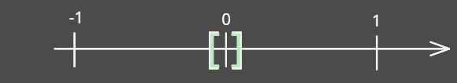
Topologia con Seno
Definizione
Dove è la topologia indotta dalla distanza euclidea .
Tale insieme è topologia su
Link all'originaleDim
- Sia . Risulta che:
a. Se tutti gli sono vuoti allora
b. Se allora vale la 2
c. Se e allora vale la 2 poiché e- Siano .
a. Se . Analogamente vale se .
b. Se , allora
Confronto Tra Topologie
Link all'originaleTopologie più fini, meno fini e confrontabili
Siano due topologie. Si dice che è più fine di se . Quindi tutti gli aperti di sono aperti anche in .
Se allora si dice che le due topologie sono confrontabili.
1.3 Aperti e Chiusi
Aperto
Definizione
Data una topologia , i suoi elementi si chiamano aperti.
Link all'originaleEsempio
Nella topologia cofinita , l’insieme è un aperto di in quanto
Chiuso
Definizione
Un insieme si dice chiuso se il suo complementare è aperto.
Esempio
Nella topologia banale, è chiuso in quanto il suo complementare è , che è aperto
Proprietà dei Chiusi
- sono chiusi
- Sia una famiglia di chiusi. Allora è chiuso.
- Siano chiusi. Allora è chiuso.
Link all'originaleDim
- da cui è chiuso.
- pertanto è chiuso.
1.4 Basi di una Topologia
Base di una Topologia
Link all'originaleBase di una Topologia
Sia uno spazio topologico,
è base della topologia se
Caratterizzazione delle Basi di una Topologia
Caratterizzazione delle Basi di una Topologia
Link all'originaleDim
:
Se è base per allora
- sia . Allora per definizione di base
- Siano Poiché dunque per definizione di base
:
Definisco
Dimostro che è topologia su .
- unione disgiunta, poiché vale la proprietà 1.
- Sia una famiglia di elementi di . Allora
Pertanto- Siano Se , per la proprietà 3. si ha che . Pertanto
Base della Topologia Euclidea
In gli insiemi con e costituiscono una base per la topologia euclidea
Caratterizzazione delle basi di una Topologia 2
è una base per se e solo se verifica le seguenti proprietà:
- tali che
Esempio
Definisco .
- Se allora dove
I Numeri Primi sono Infiniti
I numeri primi sono infiniti
Link all'originaleDim
Supponiamo per assurdo che i numeri primi siano finiti
Definisco e
Allora Questo perché solo non sono primi (per definizione) e non sono multipli di numeri primi.
Osservo inoltre che
Tale insieme è chiuso, in quanto complementare di aperto, e aperto poiché unione di aperti. In altre parole, tutti gli aperti sono chiusi.
Quindi è chiuso per unione finita di chiusi e è aperto. Ma questa è una contraddizione, in quanto gli aperti sono infiniti in .
Topologie confrontabili e basi
Link all'originaleProposizione
Esempio di Confronto tra Topologie
Esempio
La base per la topologia euclidea su è
La base per la topologia del limite inferiore è
La K-topologia su è generata dalla base con
Topologia Confronto vs vs vs non confrontabili Link all'originaleApplico la proposizione precedente per dimostrare che :
Prendo e arbitrari. Si ha che , da cui la tesi.
Viceversa, se considero ,
1.5 Intorni e Sistemi Fondamentali di Intorni
Intorni
Intorno di un punto
Sia uno spazio topologico e . Si dice che è intorno di se .
Esempi di intorni in
- Dato , un suo intorno è
- Sono intorni di 0:
- NON sono intorni di :
Esempi di intorni in
- Sono intorni di 0: (perché è un aperto di ),
- Non sono intorni di 0:
Link all'originaleNella topologia discreta
Tutti i sottoinsiemi sono intorni di .
Caratterizzazione degli aperti
Teorema
Sia uno spazio topologico. Sia , allora:
è aperto di è intorno di ogni suo punto.Link all'originaleDim
Supponiamo e . Allora
Se è intorno di ogni suo punto, allora
Osservo che è aperto in quanto unione di aperti.
Sistema fondamentale di intorni
Sistema fondamentale di intorni
Sia uno spazio topologico. Una famiglia di insiemi si dice sistema fondamentale di intorni se
Esempi di Sistemi fondamentali
In , un sistema fondamentale di intorni è
Le basi definiscono sistemi fondamentali di intorni
Sia spazio topologico e base per . Allora è un sistema fondamentale d’intorni.
Link all'originaleDim
Sia e . Sia che contiene . Per definizione di base . Quindi .
1.6 Assiomi di Numerabilità
Spazio topologico Primo-numerabile
Spazio topologico Primo-numerabile
Sia uno spazio topologico. Si dice che esso è I-numerabile se Sistema fondamentale di intorni numerabile, ossia che abbia cardinalità
Link all'originaleEsempio
è primo numerabile, infatti , e risulta che
La topologia cofinita non è 1 numerabile
Proposizione
La topologia cofinita non è primo-numerabile
Link all'originaleDim
Devo dimostrare che NON esiste un sistema fondamentale di intorni numerabile.
Suppongo per assurdo che sia I-numerabile. In particolare lo è per il punto ha un SFI numerabile.
Nella topologia cofinita, questi insiemi sono del tipo
Considero , ossia l’insieme dei punti esclusi dagli intorni di
Osservo che:
- è al più numerabile
- (perché )
Quindi considero l’insieme . Tale insieme è intorno , quindi .
Si avrebbe dunque che , ma ciò è assurdo in quanto
Spazio topologico Secondo-numerabile
Spazio topologico Secondo-numerabile
Sia uno spazio topologico. Si dice che esso è II-numerabile se base numerabile ossia che abbia cardinalità .
Link all'originaleEsempio
Risulta che è una base di numerabile, quindi tale spazio topologico è II-numerabile
la topologia del limite inferiore non è II-numerabile
Proposizione
La topologia è I-numerabile, ma non è II-numerabile.
I-numerabilità
Dimostro che è I-numerabile, ossia SFI.
Sia e considero (numerabile). Ogni elemento di tale insieme è un intorno di e risulta che in virtù della densità di in . Quindi è sistema fondamentale di intorni numerabile da cui la tesi.Link all'originaleII-numerabilità
Supponiamo per assurdo che base per che sia numerabile.
Osservo che .
Pertanto . Allora , e dunque . Poiché ho trovato un per ogni elemento di , allora contiene elementi, il che è assurdo.
2. Sottoinsiemi di uno Spazio Topologico
2.1 Interno di un Insieme e Punti Interni
Punto interno
Link all'originalePunto interno
Siano uno spazio topologico e .
Si dice che è un punto interno ad se
Interno
Interno di un insieme
Sia uno spazio topologico e . Si definisce interno di l’insieme:
Ossia è l’unione di tutti gli aperti contenuti in
Proprietà dell'interno
- ;
- ;
- ;
- , cioè è il più grande aperto contenuto in ;
Dim
- Ovvio poiché unione di interni
- Ovvio perché unione di sottoinsiemi di
- Se è aperto, allora .
Se allora è unione di aperti- Vero perché è l’unione di tutti gli aperti contenuti in
Esempi di interni in
- Se allora
- Se allora
Proposizione
Sia . Allora
Link all'originaleDim
è interno ad .
2.2 Chiusura di un Insieme
Chiusura di un insieme
Chiusura di un insieme
Siano uno spazio topologico e .
Si chiama chiusura di un’insieme
Ossia è l’intersezione di tutti i chiusi che contengono .
Proprietà della chiusura
- è chiuso (per la proprietà 2 dei chiusi)
- è il più piccolo chiuso che contiene , ossia chiuso tale che
- è chiuso
Dim
- Ovvio
- Ovvio perché intersezione di insiemi contenenti
- Se chiuso e allora
- Se chiuso per la proprietà 1; se chiuso allora per la 3 .
Esempi di chiusure in
- Se allora:
\bigcap_{\begin{array} \
a \leq 0 \
b>0
\end{array}} \left[ a,b \right] =[0,+\infty[$$Link all'originale2. Se allora perché è chiuso.
3. Se allora poiché
Punti di Aderenza
Link all'originalePunti di Aderenza
Sia spazio topologico e . Si dice che è aderente o di aderenza per se intorno di tale che
Teorema sui Punti di Aderenza
Teorema
Sia uno spazio topologico e sia . Allora valgono:
- è punto di aderenza per
- Se è base per allora è p. di aderenza per .
Link all'originaleDim
Supponiamo che non è di aderenza per . Allora .
Allora è chiuso e contiene , pertanto per la 3. proprietà dei chiusi. Dal momento che .
Viceversa se , allora chiuso che contiene (posso prendere anche ). Allora è aperto e contiene , ma . Dunque non è di aderenza per .Se è p. di aderenza per allora intorno di . Ciò vale anche per gli elementi della base che contengono .
Viceversa supponiamo . Se è intorno di , allora . Per la definizione di base . Quindi e .
2.3 Punti di Accumulazione e Isolati
Punto di Accumulazione
Link all'originalePunto di Accumulazione
Sia spazio topologico e . Si dice che è punto di accumulazione per se
L’insieme dei punti di accumulazione si chiama denota .
Punto Isolato
Link all'originalePunto Isolato
Sia spazio topologico e . Si dice che è punto isolato di se tale che
In
contiene solo punti isolati.
contiene solo punti isolati.
Proposizione
Sia spazio topologico e . Allora
Dim
.
Se allora . Per cui è di aderenza, e quindi per il teorema sui punti di aderenza
Esempi di Chiusi in Topologie Diverse
Link all'originaleIn
Consideriamo .
Calcolarne in
- In
,
,
,
: infatti .- In
Ricordiamo che .
Se fosse interno a allora esisterebbe . Tale è del tipo non ha punti interni. Pertanto
I chiusi di sono chiusi oppure sono uguali a . L’unico chiuso che contiene è , quindi
Considero . Nella topologia cofinita, non esistono aperti contenuti in , quindi . Osservo inoltre che è aperto in , quindi è chiuso, di conseguenza .
. . Questo perché .
Analogamente ad , risulta che .
Osservo che in virtù dello stesso ragionamento seguito per .
L’unico chiuso che contiene è
2.4 Insiemi densi
Insieme Denso
Insieme denso
Sia spazio topologico e . Si dice che è denso in se
Link all'originaleEsempi
- è denso in
- è denso in
- è denso in
- è denso in
Infatti è aderente a .
Sia . e si ha che
Caratterizzazione degli insiemi densi
Caratterizzazione degli insiemi densi
Sia spazio topologico e .
Link all'originaleDim
:
Supponiamo e supponiamo per assurdo che .
Allora è chiuso in quanto complementare di aperto e . Quindi ho trovato un chiuso che contiene ed è contenuto in . Ma ciò è assurdo perché .
:
Sia . Allora per ipotesi . Dunque è un punto di aderenza per e dunque . Concludo che .
Topologie confrontabili e insiemi densi
Proposizione
Dim
Supponiamo che è denso in . Allora .
Poiché , si ha che
Link all'originaleControesempio
Considero e le topologie . La topologia discreta è più fine della topologia euclidea.
Sappiamo che è denso in . Tuttavia in
2.5 Punti esterni e di frontiera
Esterno
Punto esterno
Sia spazio topologico e . Si dice che è esterno ad se è interno al suo complementare
Link all'originaleEsterno
L’insieme dei punti esterni si chiama esterno e si denota
Frontiera
Link all'originalePunti di frontiera
Sia spazio topologico e . si dice punto di frontiera di se non è né interno, né esterno.
L’insieme dei punti di frontiera si denota con oppure
2.6 Identità dell’Interno, Esterno e Frontiera
Proprietà Interno, Esterno e Frontiera
Proprietà
Sia spazio topologico e . Allora valgono le seguenti proprietà dell’interno, esterno e frontiera di :
- ;
Dim
- Sia . Allora . Ma pertanto
- Supponiamo . Allora e .
Osservo che e .
Viceversa se Allora . Quindi- è chiuso in quanto unione di chiusi, inoltre quindi . (ricordo che la chiusura di un insieme è il più piccolo chiuso che contiene ).
Viceversa, e
3. Costruzioni di Insiemi
3.1 Topologia Prodotto
Topologia Prodotto
Topologia Prodotto
Siano due spazi topologici. La topologia prodotto del prodotto cartesiano è generata dalla base .
Più in generale, dati , la topologia prodotto dell’insieme è generata dalla base
Suriezione canonica della Topologia Prodotto
Considero la funzione tale che
Risulta che posto , genera (ma non è base di) .
Esempio
Considero topologia euclidea e topologia discreta, generate dalle basi e .
Considero , allora .
Se prendo l’aperto , allora
La topologia prodotto contiene rette e segmenti aperti orizzontali (ma non verticali).
Link all'originaleTopologia Prodotto su
Su la topologia prodotto è generata dalla base
Proprietà fondamentale delle mappe
Link all'originaleProprietà Fondamentale
Sia un insieme e siano date le mappe . Allora esiste ed è unica la mappa tale che e .
Ossia il diagramma commuta
3.2 Box Topologia
Prodotto Cartesiano della Famiglia Parametrizzata
Famiglia Parametrizzata
Sia un insieme non vuoto e sia una famiglia parametrizzata da .
Definisco il prodotto cartesiano di tale famiglia come:
Esempio
Considero
La coppia può essere vista come una funzione tale che . Quindi tutti gli elementi di fanno parte dell’insieme . Viceversa una funzione tale che si può scrivere come coppia .
In altre parole è isomorfo aLink all'originale
contiene tutte e sole le funzioni , ossia le successioni di numeri reali.
(che possono essere viste come -uple infinite di numeri reali).
Proiezioni Canoniche
Link all'originaleProiezione Canonica
Sia una famiglia indicizzata di insiemi.
la funzione tale che è detta proiezione.
Box Topologia
Box Topologia
Link all'originaleEsempio
Su un aperto della box topologia è
Su gli aperti sono del tipo
Confronto tra box topologia e topologia prodotto
Link all'originaleProposizione
, ossia la Box Topologia è più fine della Topologia Prodotto .
Su
Infatti, in gli aperti della topologia box da un certo in poi non hanno vincoli, cioè gli insiemi del tipo non fanno parte della topologia prodotto.
4. Sottospazi
4.1 Definizione e Basi
Topologia di Sottospazio
Sottospazio Topologico
Sia uno spazio topologico. Sia
L’insieme è una topologia su detta topologia di sottospazio.
è detta sottospazio topologico diLink all'originaleDim
Dimostro che è una topologia:
Quindi verifica la definizione di topologia
Base di sottospazio
Base di un sottospazio
Se è base per , allora è base per il sottospazio
Dim
Sia e
Allora per la definizione di base .
Dunque dato un aperto di , per ogni suo punto posso trovare un elemento della base che contiene e che è contenuto in tale aperto.
Link all'originaleEsempi di sottospazi
In considero
Allora la base per è formata dagli elementi del tipo:
Osservo che è aperto di ma NON è aperto di .
Chiusi e interni di spazi topologici (proprietà)
Proprietà
Sia uno spazio topologico e
- Se
Dim
- Verifico la doppia inclusione (utilizzo il teorema sui punti di aderenza 1.)
Sia
(ossia ) intorno di risulta (perché è punto interno ad ).
Sia tale che .
Allora
Ho dimostrato che
Sia e sia . Allora .
Poiché interno ad (rispetto ), si ha che
Quindi perché verifica la proprietà di punto interno.
- \displaystyle Int_{Y}(A)=\bigcup_{\substack{U\in \tau_{Y} \\ U\subseteq A}}U$$\displaystyle=\!\!\!\!\!\bigcup_{\substack{V\in \tau \\ V\cap Y\subseteq A}}\!\!\!\!(V\cap Y).
Osservo che (figura sotto)
\displaystyle Y\cap \!\!\!\!\bigcup_{\substack{V\in \tau \\ V\cap Y\subseteq A}}V=$$\displaystyle Y\cap\!\!\!\!\!\!\!\! \bigcup_{\substack{V\in \tau \\ V\subseteq A\cup (X\setminus Y)}}\!\!\!\!\!\!\!\!\!V=Int_{X}(A\cup(X\setminus Y))
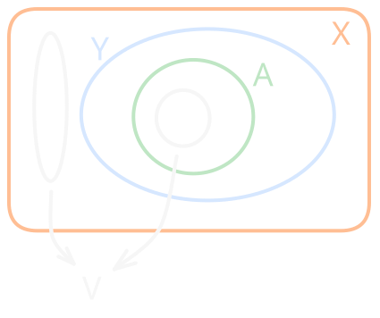
5. Mappe Continue e Omeomorfismi
5.1 Definizione e Proprietà
Mappa Continua
Mappa continua
Siano spazi topologici e sia una mappa.
Essa si dice continua se
Esempio
Considero tale che
Prendo un aperto , quindi è continua.
Se scambio insieme di partenza e arrivo, invece la funzione non è più continua: infatti se considero aperto nella topologia discreta, .Link all'originaleMappa continua in un Punto
Siano spazi topologici e sia una mappa.
Essa si dice continua in se intorno aperto di esiste intorno aperto di tale che
Continuità della funzione identità
Proposizione
Siano due spazi topologici, allora:
è continua se e solo se ossia che è più fineLink all'originaleDim
è continua
Caratterizzazione delle Mappe Continue
Teorema
Siano spazi topologici e .
Allora vale la seguente equivalenza:
a. è continua globalmente
b. è continua in
c. chiuso di è chiuso in
d.Link all'originaleDim
a. b.
Sia . allora intorno di si ha che è aperto.
Inoltre poiché . Quindi ho trovato un intorno di , da cui la tesi.b. a.
Per ipotesi intorno aperto di esiste intorno di tale che .
Sia : dimostro che è intorno di ogni suo punto.
Sia . allora intorno aperto di tale che . Ciò significa che è intorno di per definizione. Per l’arbitrarietà di , si ha che è aperto, in virtù della caratterizzazione degli aperti.
a. c.
Si dimostra che
a. d.
Suppongo che sia continua. Sia e sia , cioè . Per provare che applico il teorema sui punti di aderenza e dimostro che intorno di , .
Poiché è continua, allora è aperto e contiene , quindi è intorno di . Poiché è un punto di aderenza per , tutti i suoi intorni hanno intersezioni non vuote con .
Quindi .
d. a.
Supponiamo viceversa che
Devo dimostrare che chiuso, è chiuso.
Dunque . L’ultima uguaglianza risulta dal fatto che la chiusura di un insieme chiuso è l’insieme stesso.
Pertanto per le proprietà dei chiusi.
Quindi è chiuso da cui la tesi.
Mappe Continue e Basi
Link all'originaleProposizione
Regole per la costruzione delle funzioni continue
Regole per la costruzione delle funzioni continue
Siano due spazi topologici:
- Se è funzione continua, allora è continua.
- Se , allora tale che è continua
- Sia è spazio topologico, e sono funzioni continue, allora è continua
Link all'originalePunto 1
Sia tale che
Sia
In entrambi i casi, la controimmagine di è un aperto di , quindi è continua.
Lemma dell'Incollamento
Lemma dell'Incollamento
Sia , dove sono chiusi in
Siano e funzioni continue tali che .
Allora continua definita ponendo:
Link all'originaleDim
continua aperta chiusa
Osservo che se è chiuso,
- è chiuso
- è chiuso
Quindi è chiuso, e per l’arbitrarietà di risulta che è continua.
Inoltre è ben definita perché se allora
Teorema sulle funzioni continue e topologia prodotto
Teorema
Sia uno spazio topologico e munito di topologia prodotto. Allora tale che è continua se e solo se è continua
Link all'originaleDim
Osservo che dove è la proiezione rispetto , che è continua.
Se è continua, allora è continua
Se tutte le sono continue, allora :
Poiché e sono continue, allora è aperto quindi è continua.
Box Topologia e Continuità
Link all'originaleLa Box Topologia non garantisce la continuità delle funzioni
Consideriamo (topologia euclidea) e la box topologia.
Definisco tale che
Considero l’aperto di ,
Com’è fatto ?
Osservo dunque che la controimmagine di è un chiuso di , quindi non è una funzione continua
5.2 Omeomorfismi
Mappa Aperta
Link all'originaleMappa Aperta
Una funzione si dice aperta se aperto si ha che è aperto
Mappa Chiusa
Link all'originaleMappa chiusa
Una funzione si dice chiusa se chiuso si ha che è chiuso
Omeomorfismo
Omeomorfismo
Siano spazi topologici e .
Quest’ultima si dice omeomorfismo se:
- è continua
- è bigettiva
- è continua
Inoltre e si dicono omeomorfi
Link all'originaleEsempio
Non ci sono tagli, incollamenti o “buchi”, quindi vengono garantite rispettivamente continuità, iniettività e suriettività
Caratterizzazione degli omeomorfismi
Proposizione
Sia una mappa tra spazi topologici. Essa è omeomorfismo se e solo se:
- è bigettiva
- è aperta
Link all'originaleDim
bigettiva
aperta continua
aperta continua
Notazione
Per indicare una ingezione si può usare il simbolo e per indicare una suriezione si usa
Gruppo degli Automorfismi
Gruppo degli Automorfismi
L’insieme è omeomorfismo è chiamato gruppo degli automorfismi di
Link all'originaleDim
Dimostro che è un gruppo:
- è l’elemento neutro rispetto all’operazione
- in quanto è omeomorfismo, dunque la sua inversa è omeomorfismo e
6. Distanze e Spazi Metrici
6.1 Metriche
Metrica
Metrica
Sia un insieme. si dice metrica o distanza se verifica le seguenti proprietà:
- ;
- ;
- ;
- (Disuguaglianza Triangolare).
Distanza Euclidea
- In , la distanza euclidea è
- Più in generale in la distanza euclidea è definita così:
-metrica
In , la -metrica si definisce ponendo
-metrica
Se si ottiene la -metrica:
Link all'originaleMetrica discreta
Sia un insieme non vuoto. La Metrica Discreta è definita ponendo:
Spazio metrico
Spazio Metrico
Sia un insieme e una metrica. Si definisce spazio metrico la coppia
Link all'originaleEsempi di spazi metrici
- con distanza euclidea.
- l’insieme delle funzioni continue sull’intervallo . Posso definire la metrica .
è spazio metrico
Palla aperta
Palla aperta
Sia e una metrica.
Definisco la palla aperta l’insieme con
Le palle aperte sono della distanza euclidea tipo con .
Nel piano cartesiano sono rappresentate dai punti che si trovano all’interno di una circonferenza di centro e raggio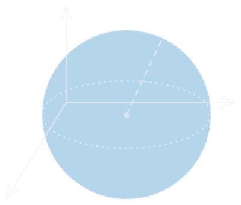
Link all'originale-metrica
Gli aperti della -metrica in sono dei quadrati
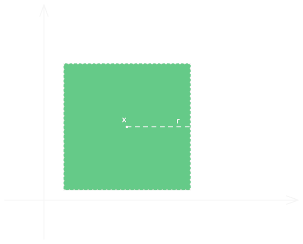
Metriche Equivalenti
Metriche Equivalenti
Siano due metriche su .
Si dice che sono equivalenti se inducono la stessa topologia.
Link all'originaleEsempio
Risulta che in la metrica euclidea e la -metrica sono equivalenti.
Questo perché preso un qualsiasi cerchio aperto di posso ricoprirlo di aperti di e viceversa, quindi ogni aperto di è unione di aperti di e viceversa
Distanza di un punto da un insieme
Distanza di un punto da un insieme
Siano uno spazio metrico e
Si definisce distanza di da :
Link all'originaleOsservazione
Non è detto che
Ad esempio, se considero e , , ma
Spazio Metrizzabile
Spazio Metrizzabile
Uno spazio topologico si dice metrizzabile se esiste una metrica che induce alla topologia .
è metrizzabile, infatti è indotta dalla distanza euclidea.
Link all'originaleTopologia Discreta
La topologia discreta è indotta dalla distanza discreta, definita così:
British Rail Express Metric (SNCF Metrica)
Link all'originaleBritish Rail Express Metric
Sia e definita come:
Si dimostra che soddisfa le proprietà di metrica.
Le palle aperte di sono del tipo:
6.2 Topologie indotte da Metriche
Topologia indotta da una metrica
Topologia indotta da una metrica
Link all'originaleMetrica discreta
Le palle aperte definite sulla metrica discreta su sono del tipo
Osservo che tutti i singoletti sono aperti, quindi anche la loro unione è un aperto. Ciò significa che la topologia indotta dalla metrica discreta contiene tutti i sottoinsiemi di , dunque è la topologia discreta
Le topologie indotte sono I-numerabili
Le topologie indotte sono I-numerabili
Sia e una metrica su . Sia la topologia indotta.
Allora è I-numerabileLink all'originaleDim
Considero .
Dimostro che è sistema fondamentale di intorni.
Sia tale che . Allora poiché ha come base l’insieme di tutte le palle aperte di . Per il principio di archimede, tale che . Ho trovato dunque un elemento di contenuto in .
Dall’arbitrarietà di e di perviene la tesi.
Lemma sulle Metriche e Confronto tra Topologie
Link all'originaleProposizione
Siano metriche su . Allora risulta che
Teorema sulla Metrica euclidea, Distanza Chebyshev e Topologia Prodotto
Teorema
Le topologie indotte dalla metrica euclidea e dalla metrica di chebyshev sono uguali alla topologia prodotto su .
Link all'originaleDimostrazione
Per verificare l’uguaglianza, devo far vedere che ogni aperto di una topologia è contenuto da un aperto dell’altra topologia e viceversa.
Dimostro prima di tutto che le metriche e sono equivalenti, ossa inducono la stessa topologia.
Siano . Risulta che:
infatti, considerato , si ha che
Ottengo dunque .
Inoltre vale:
Ho dimostrato dunque che le metriche sono equivalenti:
e .
Quindi se da cui
(non il viceversa perché se non è detto che quindi non tutti i punti di sono anche punti di a parità di )
Viceversa se quindi
Dimostro ora che la topologia indotta da è uguale alla topologia prodotto.
Sia e sia
Allora
Quindi, scelto risulta che .
(Ossia: )
Per l’altra inclusione mi basta prendere
6.3 Metrica e Topologia Uniforme
Metriche e
Consideriamo , se cerchiamo di generalizzare e rischiamo che non siano ben definite. Infatti, posti e :
potrebbe divergere, proprio come .
Metrica Uniforme
Link all'originaleMetrica Uniforme
Considero su , si chiama metrica uniforme la funzione .
Osservo che soddisfa le proprietà delle distanze
Metrica Uniforme su R^J
Metrica Uniforme su
Sia un’insieme di indici, e siano .
Definisco come la metrica uniforme su
Questa è una generalizzazione della metrica uniforme.Link all'originaleDim
Dimostro che è una metrica:
Le proprietà 1, 2 e 3 sono ovvie, dimostro la disugaglianza triangolare:
Siano : poiché la dis. triangolare vale per , si ha che:
Topologia Uniforme
Link all'originaleTopologia Uniforme
La metrica uniforme induce una topologia chiamata Topologia Uniforme
Confronto tra Topologia Uniforme e Topologia Prodotto
La Topologia Uniforme è più Fine della Topologia Prodotto
Se è infinito, la topologia uniforme è più fine della topologia prodotto. Se allora le due topologie coincidono.
Link all'originaleDimostrazione
Sia Considero un’aperto di con infinito centrato in . Tale aperto è del tipo , dove da un certo in poi (ossia definitivamente).
Sia l’insieme finito degli indici per il quale .
scelgo tale che e definisco .
Osservo che , dunque . Per il Lemma sulle Metriche e Confronto tra Topologie si ha la tesi, dato che per ogni aperto generico di ho trovato un aperto della topologia uniforme.
Teorema sulla Topologia Prodotto Indotta dalla D Metrica
Topologia Prodotto Indotta dalla Metrica
Sia la metrica uniforme su . Se , definisco .
Risulta che è una metrica e induce la topologia prodotto .Link all'originaleDimostrazione
Ѐ necessario dimostrare che è metrica. I primi 3 assiomi sono ovvi, dimostro che vale la dis. triangolare.
Siano :
Dunque è una metrica.
Per dimostrare che induce , applico il Lemma sulle Metriche e Confronto tra Topologie in entrambe le direzioni.
Provo innanzitutto che la topologia prodotto è più fine della topologia indotta da .
Sia un aperto di e . Devo trovare
Sia per qualche .
Sia .
Considero .
Ovviamente , quindi resta da dimostrare che .
In generale vale che se (perché il numeratore al massimo può essere 1, mentre il numeratore è maggiore di ).
Dunque
Se e , allora quindi .
(in pratica ponendo , mi sono assicurato che i punti di abbiano distanza )
Proviamo adesso che ogni aperto della topologia prodotto contiene un aperto della topologia indotta da .
Sia di , dove è un aperto di per e .
In altre parole sto facendo in modo che definitivamente (per come sono fatti gli aperti di ).
fisso un tale che
Definisco .
Osservo che
Quindi .
Per gli altri indici ovviamente .
Concludo che .
Ho provato quindi che la topologia indotta dal e la topologia prodotto sono uguali.
6.4 Continuità
Teorema sulla Continuità di Mappe tra Spazi Metrici
Continuità delle funzioni tra Spazi Metrici
Siano due spazi metrici.
Una funzione è continuaLink all'originaleDimostrazione
Se è continua allora è aperto in .
Allora .
DunqueSuppongo che valga la condizione metrica . Voglio dimostrare che è continua in senso topologico.
Sia un aperto di . Considero la controimmagine .
Devo dimostrare che è aperto in , ovvero che per ogni suo punto esiste un intorno contenuto in .Sia . Per definizione .
Poiché è aperto, tale che la palla .Per l’ipotesi iniziale, in corrispondenza di questo , tale che:
In termini insiemistici, questo significa che l’immagine della palla di raggio cade nella palla di raggio :
Unendo le inclusioni ottengo
Applicando la controimmagine
Poiché ho trovato un raggio tale che , concludo che è aperto.
Lemma della Successione
Lemma della Successione
Sia uno spazio metrico e sia .
Supponiamo che esiste una successione in convergente a . Allora .
Il viceversa vale se è metrizzabileLink all'originaleDim
Se allora ogni intorno di ha almeno un punto di , quindi in base alla Teorema sui Punti di Aderenza.
Viceversa supponiamo che sia metrizzabile.
Sia la distanza che induce tale topologia e sia
Considero l’intorno . Scelgo (posso perche è di aderenza). Ho trovato .
6.5 Convergenza
Teorema Sulle Successioni Convergenti e Funzioni Continue
Teorema
Sia e è spazio topologico una mappa continua, allora successione convergente, allora .
Il viceversa vale se è metrizzabile.Link all'originaleDim
Suppongo che sia continua e sia .
Sia tale che . Allora è intorno di
Pertanto tale che , e quindi risulta che
(bisogna ricordarsi che intorno di ).
Viceversa supponiamo successione convergente, allora e è metrizzabile.
Dobbiamo provare che se allora
per il Lemma della Successione si ha che se allora . Ma per ipotesi . Pertanto
Quindi per la Caratterizzazione delle Mappe Continue si ha che è continua.
Convergenza Uniforme
Link all'originaleConvergenza Uniforme
Sia una successione di funzioni con spazio metrico e sia .
Se allora si dice che converge unformemente a .
Teorema del Limite Uniforme
Teorema del Limite Uniforme
Sia una successione di funzioni da spazio topologico a spazio metrico.
Se converge uniformemente a , allora è continuaLink all'originaleDim
Sia , aperto, vogliamo dimostrare che è aperto in .
Sia , cerco un intorno di tale che .Sia e sia tale che
Per la uniforme convergenza di si ha che .
Poiché è continua (per ipotesi), scelgo intorno di tale che
Pertanto si ha che se
Quindi , da cui
Per l’arbitrarietà di segue la tesi.
7. Spazi di Haussdorf e Assiomi di Separazione
7.1 Definizione
Hausdorff
Spazio Topologico di Hausdorff
Uno spazio topologico si dice di Hausdorff se esiste un intorno aperto di e un intorno di tali che
Link all'originalee sono di Hausdorff:
Assiomi di Separazione
Link all'originaleAssiomi di separazione e
7.2 Proprietà
Teorema di Unicità del Limite in Spazi di Hausdorff
Teorema di Unicità del Limite
Se spazio topologico è di Hausdorff, allora ogni successione converge al più a un punto.
Link all'originaleDimostrazione
Supponiamo che sia una successione convergente a e a con .
Allora poiché è di Hausdorff, allora intorni aperti rispettivamente di e tali che .
Per definizione di limite di successione, . Ma allora non può convergere a , da cui l’assurdo.
I singoletti sono Chiusi Negli Spazi Hausdorff
Teorema
Sia uno spazio topologico di Hausdorff. Allora gli insiemi sono chiusi.
Link all'originaleDimostrazione
Sia e considero .
Poiché è di Hausdorff, allora intorno aperto di tale che Pertanto è intorno di tutti suoi punti e per la caratterizzazione degli aperti è aperto, dunque è chiuso.
Proprietà degli Spazi di Hausdorff
Proprietà
- Il prodotto tra due spazi di Hausdorff è
- Ogni sottospazio di uno spazio è
Link all'originaleDimostrazione della proprietà 1.
Siano spazi topologici . Siano tali che .
Senza perdere di generalità, si può assumere che .
Poiché è di Hausdorff, allora intorni aperti rispettivamente di e tali che .
Scelgo intorni di .
Risulta che , pertanto è di Haussdorf.
Caratterizzazione degli Spazi di Hausdorff
Caratterizzazione degli Spazi di Hausdorff
Sia spazio topologico. Allora vale la seguente equivalenza:
- è
- è chiuso in
Suppongo che sia di Hausdorff, dimostro che è chiuso, cioè che è aperto.
Sia . Poiché è , allora intorni aperti di tali che .
Osservo che in quanto prodotto cartesiano di due aperti.
Risulta che , dunque
Per l’arbitrarietà di e , risulta che è aperto, dunque è chiuso.Link all'originale
Supponiamo viceversa che sia chiuso, ossia che è aperto.
Siano .
Allora aperto tale che , ossia che aperti per che contengono rispettivamente
Quindi è intorno di e è intorno di e risulta che , poiché .
Ho trovato due intorni aperti disgiunti di e , dunque è di Hausdorff
8. Quozienti
8.1 Mappa quoziente e Relazioni di Equivalenza
Mappa Quoziente
Mappa Quoziente
è una mappa quoziente se è suriettiva e se
Osservazione
Se è suriettiva, continua e aperta, allora è una mappa quoziente
Link all'originaleEsempio di Mappa Quoziente
Sia dotato di e sia
tale che
Risulta che:
- è continua, perché lo sono e e vale il teorema sulle funzioni continue e topologia prodotto
- è suriettiva per le proprietà di e
- è una mappa quoziente
- non è aperta, infatti se che è aperto nel sottospazio ,
Insieme Saturo rispetto a una Relazione
Link all'originaleInsieme Saturo
Sia un insieme e una relazione di equivalenza e sia .
Esso si dice saturo se .
8.2 Topologia Quoziente
Topologia Relativa a una Mappa Quoziente
Teorema
Sia spazio topologico e insieme, sia suriettiva.
Allora topologia tale che è mappa quoziente.Link all'originaleDimostrazione
Definisco
Devo dimostrare che è topologia.
- è suriettiva
- Sia una famiglia di insiemi di , dunque .
Pertanto . Pertanto- Siano , da cui .
Quindi
Topologia Quoziente
Link all'originaleTopologia Quoziente
Sia uno spazio topologico e una relazione di equivalenza su .
Sia
Allora esiste una topologia in virtù del Teorema sulla topologia relativa a una mappa quoziente. Tale topologia si chiama Topologia Quoziente
Costruzione delle Funzioni Composte
Link all'originaleOsservazione
Considero mappa quoziente e sia .
Quando tale che ?
Potrei costruire tale funzione tale che con .
Tuttavia questo non è ben definito, perché se c’è un non è detto che
É necessario dunque che
Dunque definisco in modo tale che:
, sia allora
Se , per la vale
In tal caso tale che
Inoltre se è continua, allora anche è continua.
Unicità della Topologia Quoziente
Unicità della Topologia Quoziente
Sia uno spazio topologico e siano
Se , ossia vale in entrambe le direzioni
Allora e omeomorfismo.
Link all'originaleDimostrazione
Esempio sull'unicità della Topologia Quoziente
Link all'originaleEsempio 1
Sia una relazione di equivalenza tale che (ossia identifica i bordi del segmento)
Consideriamo tale che (dall’esempio della mappa quoziente)
tale che
Risulta che . L’ultima doppia implicazione vale perché
Le condizioni del Teorema sull unicità della topologia quoziente sono verificate, per cui omeomorfismo
Toro
Link all'originaleToro
Definizione 1
L’insieme è chiamato toro
Definizione 2 (versione astratta)
Sia . Su definisco la relazione di equivalenza:
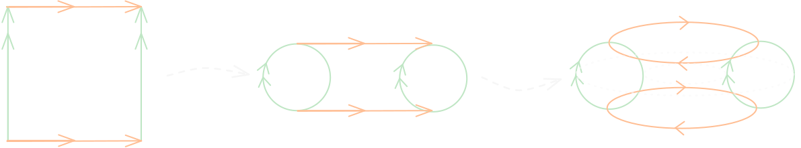
Il toro è definito come l’insieme e risulta omeomorfo a .
Infatti, definisco tale che
Si dimostra che è una mappa quoziente e inoltre vale che:
Dunque per il teorema sull’Unicità della Topologia Quoziente si ha che è omeomorfo aDefinizione 3
dove è la relazione di equivalenza tale che
Anche questo toro è omeomorfo aDefinizione 4 In prendiamo la circonferenza perpendicolare all'asse di raggio e centrata in Se le facciamo un moto di rivoluzione attorno all'asse , le coordinate non variano, mentre e variano: Tale parametrizzazione descrive il toro, che può essere definito anche così: Dunque
Il toro è una superficie di rivoluzione in
8.3 Pushout
Incollamento di spazi (pushout)
Incollamento di spazio
É possibile “incollare” due spazi topologici e lungo l’immagine di un “sottoinsieme” comune mediante due mappe continue .
Definisco la relazione di equivalenza è definita identificando , il pushout
Si possono definire due applicazioni continue:
\begin{align} \\ i_{X}:X\to X&\cup_{A}Y \\ &\longmapsto\text{un modo per incollare spazi topologici} \\ i_{Y}:Y\to X&\cup_{A}Y \\ \end{align}Esempio di pushout
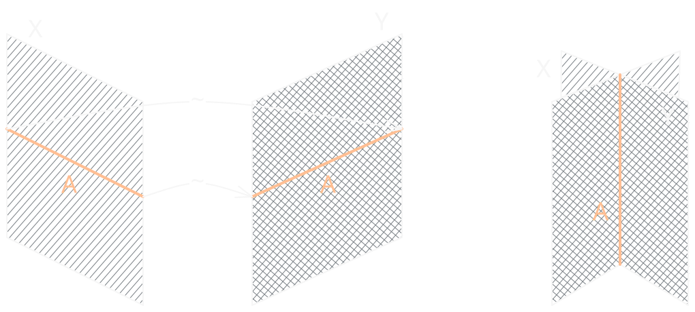
Link all'originaleProprietà Fondamentale
Sia uno spazio topologico e siano e funzioni continue tali che .
Allora tale che il seguente diagramma è commutativo
Inoltre e , pertanto è compatibile rispetto alla relazione di equivalenza
Orecchino Hawaiiano
Link all'originaleOrecchino Hawaiiano
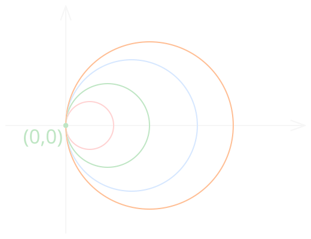
Considero l’insieme di cerchi con centro , e raggio
Definisco
può essere definito come con la relazione di equivalenza che identifica con
è anche uguale a
Posso descrivere un cammino su mediante la mappa tale che mentre il loop inverso
Se considero la semiretta orizzontale positiva:
I punti di intersecano ogni circonferenza esattamente una volta:
.
Dunque .
Risulta che non è chiuso nella topologia indotta da . Infatti se lo fosse, conterrebbe i suoi punti di accumulazione. Infatti, considerando la successione tende al punto .
8.4 Mappe quozienti e Sottospazi
Teorema sulle Mappe Quozienti per Topologie Indotte
Mappa Quoziente e Topologia Indotta
Sia un qualsiasi insieme e una mappa quoziente.
Restringo ad , ottenendo la funzione
Non è detto che sia mappa quoziente.Teorema
Sia una mappa quoziente e sia un sottoinsieme saturo di . Posto , allora
- Se è aperto (o chiuso) allora è mappa quoziente.
- Se è aperta o chiusa allora è mappa quoziente.
Link all'originaleDimostrazione
Per ottenere la tesi, dimostriamo le seguenti uguaglianze:
- se
- se
Osserviamo che, poiché e è saturo, allora .
Sia che coincidono con il sottoinsieme di che manda in .Per la seconda equazione, per ogni coppia di sottoinsiemi e di vale sempre l’inclusione:
Dimostriamo l’inclusione inversa:
Supponiamo che per qualche e .
Poiché è saturo, esso contiene interamente la fibra di :
Poiché appartiene a , allora .
Essendo anche , concludiamo che .
9. Spazi Connessi
9.1 Definizione e Proprietà
Spazio Connesso
Link all'originaleSpazio Connesso
Sia spazio topologico e siano tali che
Se non è possibile fare una separazione, allora è connesso, ossia se:
- sono aperti in e
Insiemi Clopen e Spazi Connessi
Link all'originaleOsservazione
Teorema sull'immagine di spazi connessi mediante funzioni continue
Teorema
L’immagine di spazi connessi mediante funzioni continue è connesso.
Link all'originaleDim
Siano uno spazio topologico connesso e continua.
Supponiamo che sia suriettiva (in alternativa si può considerare )
Se per assurdo non fosse connesso, allora si avrebbe una separazione, ossia tali che e .
Risulta allora che:
- ;
- sono aperti, in quanto è continua;
- poiché è suriettiva;
- poiché e suriettiva.
Ho trovato dunque una separazione di , il che è assurdo in quanto è connesso.
9.2 Sottospazi e Prodotti
Lemma sugli Spazi Connessi e Sottospazi
Lemma
Sia uno spazio topologico, se formano una separazione e è un sottospazio topologico connesso, allora oppure .
Link all'originaleDim
Per ipotesi e .
Inoltre poiché è connesso e , inoltre sono aperti.
è connesso per ipotesi, quindi se e (contemporaneamente) fossero non vuoti, allora si avrebbe una separazione di , da cui l’assurdo.
Teorema sull'Unione di Spazi Connessi
Teorema
L’unione di una collezione di sottospazi connessi di uno spazio topologico aventi un punto in comune è connessa.
Link all'originaleDimostrazione
Siano una collezione di sottospazi connessi e sia un punto il comune tra di essi.
Sia . Supponiamo per assurdo che non sia connesso, ossia che esistano aperti non vuoti di tali che e .
Allora, si avrebbe che oppure . Supponiamo senza ledere la generalità che .
Poiché gli sono connessi, allora per il lemma sugli spazi connessi e sottospazi si ha che . Ma allora si avrebbe che , da cui l’assurdo, in quanto per ipotesi. Dall’assurdo segue la tesi
Prodotto di Spazi Connessi
Teorema
Dimostrazione per due spazi connessi
Considero spazi connessi e il loro prodotto .
Sia
Osservo che (omeomorfo) e pertanto sono connessi.
Definisco
In virtù del teorema sull’unione di spazi connessi risulta che è connesso.
Pertanto, è connesso.Link all'originaleDimostrazione per spazi connessi
Abbiamo già dimostrato il caso
Supponiamo che la tesi valga per sottospazi e dimostriamolo per .
Considero , allora è connesso.
La Box Topology non è Connessa
Link all'originaleEsercizio con Box Topology
Dimostro che non è connesso
Mi basta trovare due insiemi disgiunti non vuoti che separano .
Considero:
- l’insieme delle successioni limitate
- l’insieme delle successioni non limitate
Risulta che i due insiemi sono disgiunti e aperti per la box topologia:
dato un punto è possibile considerare un intorno .
Se è limitato, allora , se non è limitato, allora .
Dunque ho trovato una separazione rispetto alla box topology dunque non è connesso
La Topologia Prodotto è Connessa
Link all'originalecon Topologia Prodotto
Dimostriamo che è connesso.
Consideriamo
e la funzione che associa
Tale funzione è continua (in quanto lo sono le sue componenti in virtù del teorema sulle funzioni continue rispetto alla topologia prodotto)
Inoltre ogni è connesso, in quanto è prodotto di spazi connessi finito.
Inoltre tutti gli contengono il punto , pertanto la loro unione è connessa per il teorema sull’unione di spazi connessi è connessa.
(Ricordo che contiene solo successioni che ad un certo punto finiscono)
Sia e sia intorno di per la topologia prodotto.
Risulta che definitivamente da un certo in poi.
Considerato il punto . Tale punto appartiene a in quanto
Abbiamo dimostrato dunque che per ogni punto di esiste un intorno che interseca , ossia tutti i punti di sono punti di aderenza per e quindi dunque è connesso rispetto alla topologia prodotto.
9.3 Spazi Connessi per Archi
Connessione per Archi
Cammino o Arco
Dato spazio topologico, e due punti un cammino o arco è una mappa continua tale che
Link all'originaleSpazio Connesso per Archi
Uno spazio topologico è detto connesso per archi se per ogni coppia esiste un cammino.
Immagine degli Spazi Connessi per Archi mediante Funzione Continua
Proposizione
Sia una mappa continua e connesso per archi.
Allora è connesso per archi
Link all'originaleDimostrazione
Siano . Poiché è connesso per archi, allora tale che e continua.
Considero . Tale funzione è continua perché composta da funzioni continue.
Dunque è un cammino in che connette a .
Pertanto è connesso per cammini.
Ogni Spazio Connesso per Archi è Connesso
Ogni Spazio Connesso per Archi è Connesso
Link all'originaleDim
Supponiamo che sia uno spazio topologico connesso per archi.
Supponiamo per assurdo che non sia connesso.
Allora esiste una separazione di , ossia non vuoti tali che e .
Consideriamo . Poiché è connesso per archi,
esiste tale che e .
Poiché è continua, vale che:
- aperto;
- aperto.
Abbiamo trovato una separazione di , poiché aperti non vuoti tali che e .
Ma questo è assurdo perché è connesso.
La Connessione per Archi è una Relazione di Equivalenza
Proposizione
La relazione di equivalenza tale che se un cammino tra di essi è una relazione di equivalenza.
Riflessiva
Sia . La funzione è continua e .
Simmetrica
Se allora cammino da a . La funzione tale che è una cammino che connette a
Link all'originaleTransitiva
Supponiamo e , ossia esistono due cammini e
Definisco la mappa tale che:
Tale mappa è ben definita perché ed è continua per il lemma dell’incollamento e pertanto .
9.4 Componenti connesse
Componenti Connesse
Link all'originaleComponenti Connesse
Sia spazio topologico e sia una relazione di equivalenza tale che:
un sottoinsieme connesso che contiene .
Le classi di equivalenza sono dette componenti connesse di
Teorema sulle Componenti Connesse
Teorema
Le componenti connesse di sono sottoinsiemi connessi di , disgiunti tra loro, la cui unione è e tali che ogni sottoinsieme connesso di ne interseca esattamente una di esse.
Link all'originaleDim
Il fatto che le componenti connesse siano disgiunte e che la loro unione è è dato dal fatto che formano una partizione di quest’ultimo.
Supponiamo per assurdo che l’ultima affermazione sia falsa, ossia che connesso non vuoto tale che interseca due componenti connesse in punti e .
Poiché è connesso e contiene allora , pertanto fanno parte della stessa componente connessa, il che è assurdo.
Dimostriamo che ogni componente connessa è connessa.
Sia . Allora connesso che contiene e (appena dimostrato).
Dunque unione di connessi aventi un punto in comune.
Pertanto è connesso.
Componenti Connesse per Archi
Link all'originaleDefinizione
Poiché la connessione per archi è una relazione di equivalenza, le relative classi di equivalenza sono componenti connesse e prendono il nome di componenti connesse per archi
10. Spazi Compatti
10.1 Ricoprimenti e Definizione di Compatto
Ricoprimento
Link all'originaleRicoprimento
Sia una collezione di sottoinsiemi di uno spazio topologico .
Esso si dice ricoprimento se
Si dice ricoprimento aperto se è aperto
Compatto
Link all'originaleSpazio Topologico Compatto
Uno spazio topologico si dice compatto se ogni ricoprimento aperto di contiene un sottoricoprimento finito che ricopre ancora .
In altre parole, se è un ricoprimento, esiste un tale che
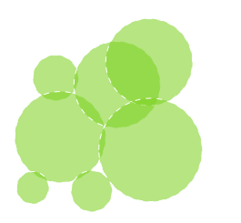
Esempi di Compatti e non Compatti
non è compatto
Consideriamo la famiglia di insiemi .
Tale famiglia è un ricoprimento di , ma non esiste una sottocollezione finita di che ricopre , dunque non è compattoLink all'originaleEsempio
L’insieme è compatto.
Infatti, presa una collezione ricoprimento di , risulta che dove è aperto, quindi intorno di .
Essendo intorno di , conterrà infiniti elementi di , e un numero finito di elementi di rimarranno fuori, cioè non sono inclusi in . Dunque posso considerare la collezione finita di insiemi che ricopre i restanti punti di .
Ho trovato dunque una collezione finita che ricopre , pertanto quest’ultimo è compatto.
10.2 Sottospazi di Spazi Compatti
Lemma sui Sottospazi Compatti
Proposizione
Sia sottospazio, allora:
è compatto ricoprimento di mediante insiemi aperti di esiste un sottoricoprimento finito che ricopre .
Supponiamo compatto ricoprimento di
.
Poiché è compatto, esiste un sottoricoprimento finito di e .Link all'originale
É ovvio per definizione
Teorema Sui Sottospazi Chiusi Dei Compatti
Teorema
Ogni sottospazio chiuso di uno spazio topologico compatto è compatto
Link all'originaleDimostrazione
Sia uno sottospazio chiuso e compatto.
Sia un ricoprimento di , risulta che dove è un aperto di
Dal momento che è compatto, risulta che esiste una collezione di finita di aperti di tali che:
dove è aperto in quanto è chiuso.
Ma allora
Ho trovato una collezione finita di aperti di che lo ricoprono, quindi è compatto
I Sottospazi Compatti di Spazi T2 sono Chiusi
Teorema
Ogni sottospazio compatto di uno spazio di Hausdorff è chiuso.
Link all'originaleDimostrazione
Provo che è aperto.
Sia . intorni aperti e disgiunti, poiché è . Risulta che è un ricoprimento di , che è compatto, quindi esiste una sottocollezione finita di aperti che ricoprono .
Poniamo e .
(PS, per uso le intersezioni perché l’intorno che cerco non deve mai intersecare , altrimenti non sarebbe un sottoinsieme di )
Risulta che è intorno di e è intorno di e .
Da questa uguaglianza concludo che .
Posso trovare dunque per ogni un intorno di tale punto, da cui è aperto, perciò è chiuso.
10.3 Mappe e Spazi Compatti
Teorema sull'immagine di compatti mediante funzioni continue
Teorema
Link all'originaleDimostrazione
Sia un ricoprimento aperto di .
Considero
Tale collezione è un ricoprimento aperto di in quanto è continua.
Dal momento che è compatto, esiste una collezione finita che ricopre . Ma allora è ricoprimento finito di , per cui è compatto.
La Biiezione continua da compatto a Hausdorff è un omeomorfismo
Teorema
Sia una mappa continua biiettiva. Se è compatto e è di hausdorff, allora è continua, cioè è omemorfo a
Link all'originaleDimostrazione
Per dimostrare che è continua, basta dimostrare che la controimmagine di ogni chiuso mediante è chiusa. Cioè che se è chiuso, allora è chiuso.
Sia un chiuso di . Poiché è compatto, allora anche è compatto per questo teorema.
Sappiamo che è continua, dunque è a sua volta compatto in quanto immagine di un compatto mediante funzione continua.
Dal momento che è , per questo teorema risulta che è chiuso in quanto compatto.
Quindi è continua
10.4 Prodotto di Compatti
Lemma del Tubo
Lemma del Tubo
Siano spazi topologici e compatto.
Sia e un aperto che contiene .
Allora intorno di tale cheLink all'originaleDim
Consideriamo e
Poiché siamo nella topologia prodotto, allora esiste un intorno aperto ( è aperto in ) centrato in
Osservo che è un ricoprimento di aperti di , che è compatto, quindi posso trovare una collezione finita di aperti che ricopre .
Definisco intorno aperto di perché intersezione finita di aperti.
Si ha che l’insieme è un intorno aperto e
La Proiezione Parallela a un Compatto è Chiusa
Proposizione
Siano spazi topologici con compatto.
Allora la proiezione è un’applicazione chiusaLink all'originaleDim
Sia un sottoinsieme chiuso, vogliamo dimostrare che è chiuso.
Verifichiamo allora che è aperto.
Sia
Allora , ossia
Poiché è chuso, allora è aperto, e per il lemma del tubo, dato che è compatto e allora intorno aperto di tale che .
Ho trovato un intorno di , pertanto tale insieme è intorno di tutti i suoi punti, quindi è un aperto è chiuso.
Il prodotto finito di Compatti é Compatto
Link all'originaleTeorema
Il prodotto finito di spazi topologici compatti é compatto
Teorema del Grafico Chiuso per spazi compatti
Link all'originaleProposizione
Sia con spazio topologico e compatto
Se il grafico di : è chiuso in allora è continua
Teorema di Heine-Boriel
Teorema di Heine-Boriel
Link all'originale
Supponiamo che sia chiuso e limitato.
limitato
Osservo che l’insieme è compatto perché prodotto finito di compatti.
E poiché è un sottospazio chiuso di un compatto, allora è compatto.
10.5 Proprietà Di Intersezione Finita
Proprietà di Intersezione Finita
Link all'originaleProprietà di Intersezione Finita
Una collezione di sottoinsiemi di uno spazio topologico ha la proprietà di intersezione finita se:
sottofamiglia finita si ha che .
Caratterizzazione della Compattezza tramite Proprietà di Intersezione Finita
Teorema
Sia uno spazio topologico, allora vale la seguente equivalenza:
- è compatto
- Ogni collezione di chiusi di che ha la proprietà di intersezione finita verifica la proprietà:
Link all'originaleDim
Provo l’equivalenza delle negazioni:
Sia una collezioni di aperti di e definiamo
Risulta che è una collezione di chiusi in è una collezione di aperti, inoltre:
- è un ricoprimento di
- Un sottoinsieme finito ricopre
Tali equivalenze sono conseguenza delle formule di De Morgan
Uno Spazio di Hausdorff Compatto Privo di Punti Isolati non é Numerabile
Teorema
Sia uno spazio topologico di Hausdorff compatto. Se non ha punti isolati, allora non é numerabile.
Link all'originaleDimostrazione
Dato aperto non vuoto e qualunque , t.c.
- Se , dato che non è isolato, esiste un p.to t.c.
- Se , poichè non è vuoto, posso scegliere un qualsiasi .
Inoltre è Hausdorff aperti disgiunti t.c.
Allora definiamo (è un aperto )
poichè e t.c.Supponiamo per assurdo che suriettiva ( è numerabile)
Sia . L’idea è di costruire per ricorsione una successione di aperti
decrescenti rispetto a "" (cioè ) t.c. ePongo , otteniamo . Poi, dato applichiamo
lo stesso argomento per per ottenereAbbiamo così ottenuto una successione di chiusi
Dato che è compatto: (proprietà di int. finita)
Sia (poichè )Per costruzione mentre
non è suriettiva poichè t.c. , da cui l’assurdo.
10.6 Compattezza per Punti di Accumulazione
Punti Isolati
Link all'originalePunto Isolato
Se è uno spazio topologico, è un suo punto isolato se è aperto.
Compatto per Punti di Accumulazione
Link all'originaleSpazio Compatto per Punti di Accumulazione
Sia uno spazio topologico. Esso si dice compatto per punti di accumulazione se ogni suo sottoinsieme infinito ha almeno un punto di accumulazione.
I Compatti lo sono anche Per Punti di Accumulazione
Teorema
Se è compatto, allora lo è anche per punti di accumulazione
Non vale il viceversaLink all'originaleDimostrazione
Poichè non ha p.ti di acc. ogni p.to di è isolato risp. a .
In particolare un intorno aperto t.c.
è chiuso in
poichè non contiene p.ti di acc. esterniConsidero la famiglia
è un ricoprimento aperto di .è il complementare di . (è aperto)
Ogni copre esattamente
Per ipotesi è compatto un sottoricoprimento finito di
t.c.
Ma è finito da cui l’assurdo